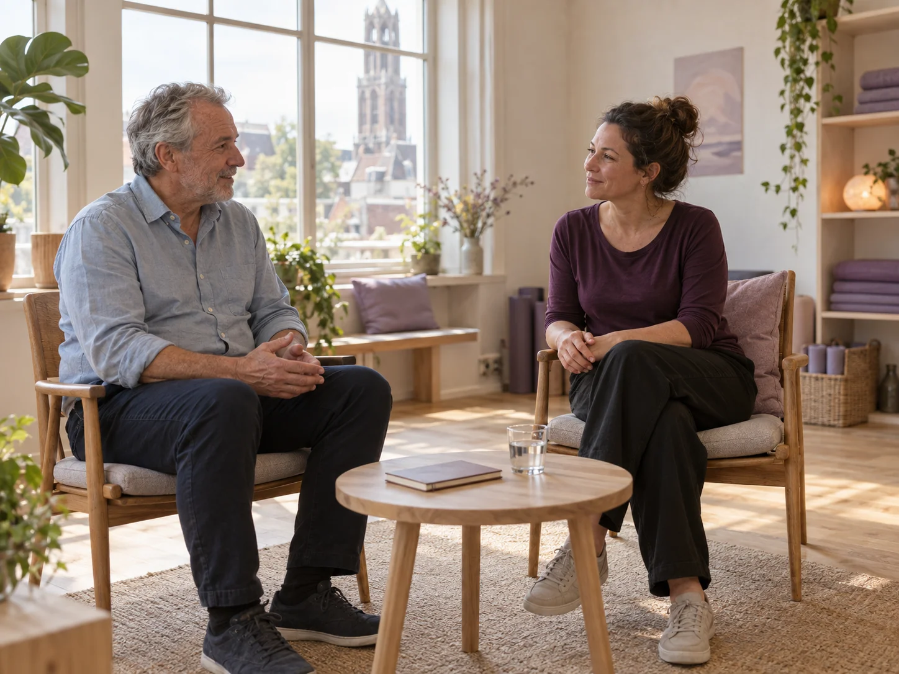
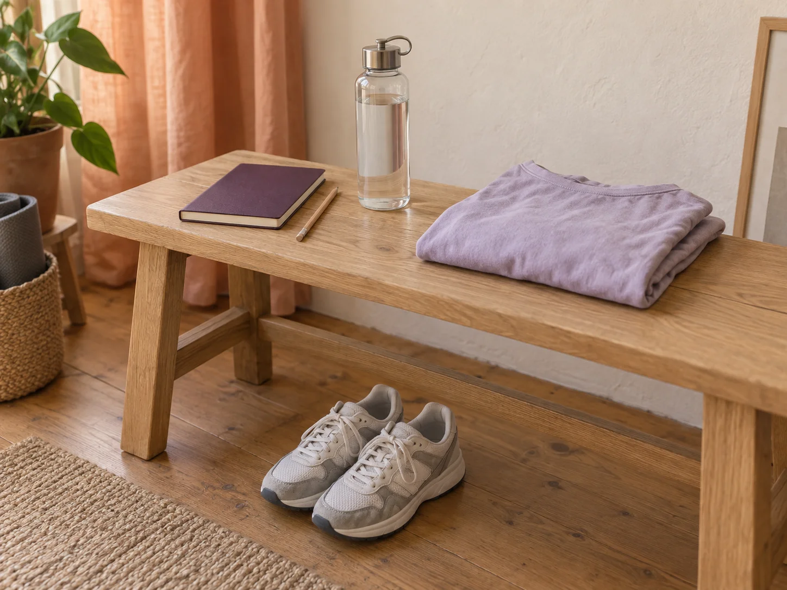

Sessions / A format for the conversation
Know what the
time is for.
Three clearly described visits, without an online treatment plan or a package of sessions to commit to. Begin with a first conversation; follow-up formats come after an initial studio visit and an agreed plan.

Time set aside for
- A one-to-one conversation in the studio
- Time to discuss ordinary activity priorities
- A clear summary of the next-step discussion
No predetermined programme, online diagnosis, exercise prescription or promised number of follow-up visits.
Initial movement consultation
First conversation
Time to talk about the everyday activities that matter to you, ask questions and consider a sensible next step together. You do not need to arrive with a finished plan.
How the time is organised
- 10 minSettle in
Get comfortable and share the questions you want to discuss.
- 25 minTalk and look together
Discuss your priorities and agree which everyday movements to look at in the room.
- 15 minLeave with clarity
Make time for questions and a summary of the next steps discussed.
Bring two or three questions about the everyday activities you want to discuss. No medical details are entered into this website.
Time set aside for
- One-to-one time in the movement room
- Supervision of a previously agreed activity plan
- A short review before you leave
Not a drop-in class, independent gym session, remote supervision or guarantee of improvement. An initial studio visit comes first.
One-to-one activity session
Supported movement
A dedicated studio visit to work through activities already agreed with your session team. There is room to ask questions as you go, then review what to discuss at the next visit.
How the time is organised
- 5 minCheck in
Talk through the focus of the agreed session.
- 30 minWork through the plan
Spend time on the previously agreed activities with one-to-one supervision.
- 5 minReview your questions
Summarise the session and anything to discuss next time.
Keep the practical questions from your last studio visit ready. This website does not provide or alter your exercise plan.

Time set aside for
- A focused one-to-one review conversation
- Time for questions about an existing plan
- A short summary of the discussion
Not a new diagnostic assessment, automatic progression or online plan review. Do not upload a plan or health information here.
Existing activity-plan review
Review & refine
A shorter conversation about the plan you already have. Bring the questions that have come up so there is a clear place to revisit the details with your session team.
How the time is organised
- 5 minCheck in
Agree the questions to cover in this review.
- 15 minLook at the existing plan
Discuss the plan already agreed and the points you want to clarify.
- 5 minSummarise
Recap what was discussed and the next conversation, if one is needed.
Bring your existing questions and any session notes you choose to use in person. Do not send or upload them through this concept website.
Keep the decision personal
A format is a description.
Suitability is a conversation.
These pages explain how the studio organises time. They do not assess your health, recommend a clinical pathway or decide what activities are right for you. Any real suitability decision belongs in an individual professional assessment.
Before choosing a time
Our preparation planner can note your preferred format, language and arrival questions. It checks the first-visit step and opening hours, then builds a practical checklist.
Illustrative fees create no bill, payment, insurance claim or reserved session. No health information is requested.
Read fees, hours & practical details ↗A little preparation
Your questions are
a good place to begin.
Choose a session format and the practical things you would like to discuss. Make a take-along checklist, at your own pace.